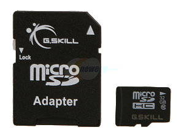
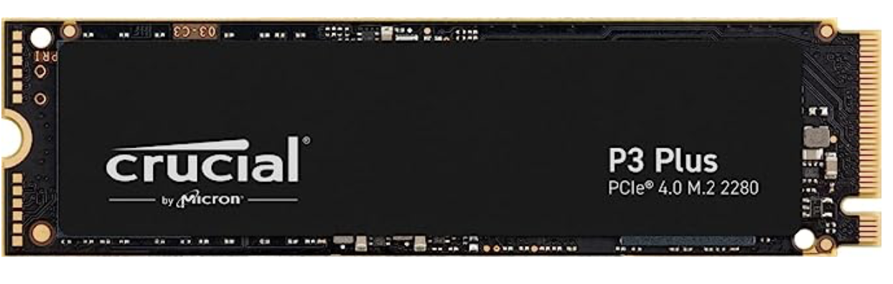
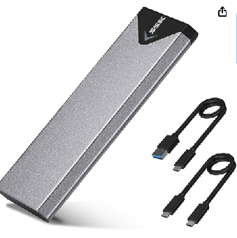

Pi Supplies
Here's a quick list of hardware you need to build this puppy. In addition to
the items listed below, you need a network connection (network cable or
Wi-Fi). A video display, USB Keyboard and Mouse are optional, as most everything
can be done via ssh.
-
A Raspberry Pi. I've used a Pi 4 Model B with 8gb RAM because they are readily available at the time of this writing.
By the time you read this, the Pi 5 may be available.
-
USB Power supply:
At least a 3 amp USB-C Power supply for Pi 4. There are many others available.
A beefier 5 amp USB-C power supply would probably be better for a Pi 5.
-
32GB microSD card w/ SD adapter

These nifty new Raspberry Pi SD Cards look intriguing to me. I ordered mine. We'll see how they work out.
-
A big 'ole USB hard drive. This could be a spinning disk or an SSD. I decided the extra cost of an SSD would be worthwhile because the SDD will be faster and use less electricity over its lifetime. The really important word here is “big”. Time Machine will back up your entire Mac, so the backup disk you use should have at least twice the storage space of your Mac.
I went with a 4tb SSD (Crucial P3 Plus 4TB PCIe Gen4 3D NAND NVMe M.2 SSD, up to 5000MB/s - CT4000P3PSSD8)

and this USB M.2 NVME SATA SSD Enclosure Adapter. (SSK Aluminum M.2 NVME SATA SSD Enclosure Adapter, USB 3.2 Gen 2 (10 Gbps) to NVME PCI-E SATA M-Key/(B+M) Key Solid State Drive External Enclosure Support UASP Trim for NVME/SATA SSDs 2242/2260/2280)

For those who want the fastest possible solution, the Pi 5 has a PCI Express interface available via a ribbon cable and adapter. As I said, I'm desirous of a Pi 5, but couldn't find one as of this writing.
Spoiler alert: I'm thinking about a Pi 5 with a 4tb M.2 NVMe SSD add-on card that also provides POE.
Next step: Setup